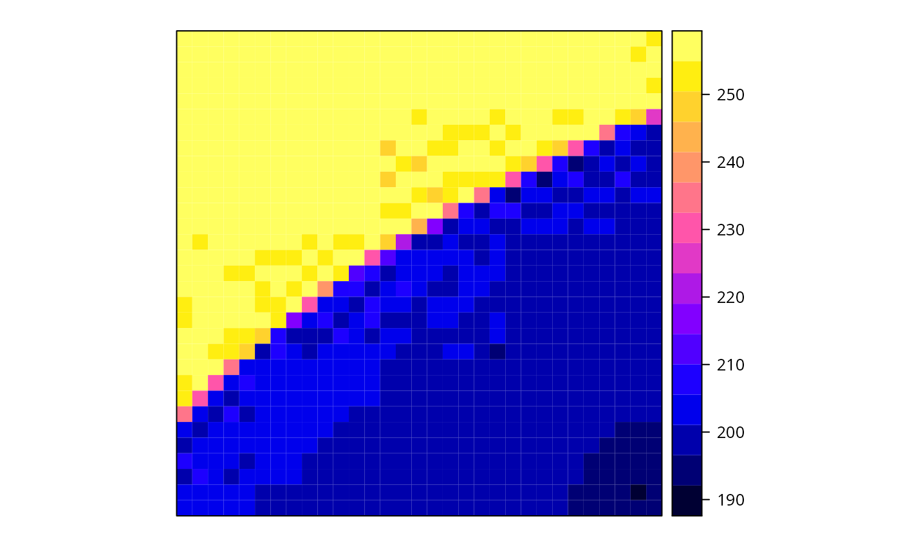
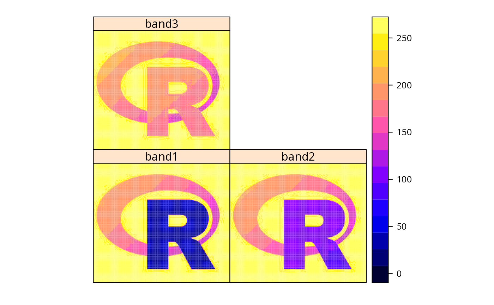

GDALReadOnlyDataset-methods.Rdsubsets GDAL objects, returning a SpatialGridDataFrame object
signature(.Object = "GDALReadOnlyDataset"): requires package
sp; selects rows and columns, and returns an object of class SpatialGridDataFrame
if the grid is not rotated, or else of class SpatialPointsDataFrame. Any arguments
passed to getRasterData (or in case of rotation getRasterTable) may be passed as
named arguments; the first three unnamed arguments are row,col,band
The [ method subsets a GDAL data set, returning a SpatialGridDataFrame object. Reading is
done on the GDAL side, and only the subset requested is ever read into memory.
Further named arguments to [ are to either getRasterTable or getRasterData:
see getRasterData
see getRasterData
see getRasterData
the other arguments, offset and region.dim are
derived from row/column selection values.
An GDALReadOnlyDataset object can be coerced directly to a SpatialGridDataFrame
See also readGDAL GDALDriver-class,
GDALDataset-class, GDALTransientDataset-class,
SpatialGridDataFrame-class .
library(grid) logo <- system.file("pictures/logo.jpg", package="rgdal")[1] x <- new("GDALReadOnlyDataset", logo) dim(x)#> [1] 175 200x.sp = x[20:50, 20:50]#> Warning: GeoTransform values not availableclass(x.sp)#> [1] "SpatialGridDataFrame" #> attr(,"package") #> [1] "sp"summary(x.sp)#> Object of class SpatialGridDataFrame #> Coordinates: #> min max #> x 19 50 #> y 125 156 #> Is projected: NA #> proj4string : [NA] #> Grid attributes: #> cellcentre.offset cellsize cells.dim #> x 19.5 1 31 #> y 125.5 1 31 #> Data attributes: #> band1 #> Min. :192.0 #> 1st Qu.:200.0 #> Median :204.0 #> Mean :224.1 #> 3rd Qu.:255.0 #> Max. :255.0spplot(x.sp)GDAL.close(x) logo <- system.file("pictures/Rlogo.jpg", package="rgdal")[1] x.gdal <- new("GDALReadOnlyDataset", logo) x = x.gdal[,,3]#> Warning: GeoTransform values not availabledim(x)#> [1] 35000 1summary(x)#> Object of class SpatialGridDataFrame #> Coordinates: #> min max #> x 0 200 #> y 0 175 #> Is projected: NA #> proj4string : [NA] #> Grid attributes: #> cellcentre.offset cellsize cells.dim #> x 0.5 1 200 #> y 0.5 1 175 #> Data attributes: #> band1 #> Min. :127.0 #> 1st Qu.:188.0 #> Median :255.0 #> Mean :224.6 #> 3rd Qu.:255.0 #> Max. :255.0spplot(x)spplot(x.gdal[])#> Warning: GeoTransform values not availableGDAL.close(x.gdal) logo <- system.file("pictures/Rlogo.jpg", package="rgdal")[1] x.gdal <- new("GDALReadOnlyDataset", logo) x.as <- as(x.gdal, "SpatialGridDataFrame")#> Warning: GeoTransform values not available#> Object of class SpatialGridDataFrame #> Coordinates: #> min max #> x 0 200 #> y 0 175 #> Is projected: NA #> proj4string : [NA] #> Grid attributes: #> cellcentre.offset cellsize cells.dim #> x 0.5 1 200 #> y 0.5 1 175 #> Data attributes: #> band1 band2 band3 #> Min. : 8.0 Min. : 75.0 Min. :127.0 #> 1st Qu.:162.0 1st Qu.:163.0 1st Qu.:188.0 #> Median :255.0 Median :255.0 Median :255.0 #> Mean :192.4 Mean :206.7 Mean :224.6 #> 3rd Qu.:255.0 3rd Qu.:255.0 3rd Qu.:255.0 #> Max. :255.0 Max. :255.0 Max. :255.0